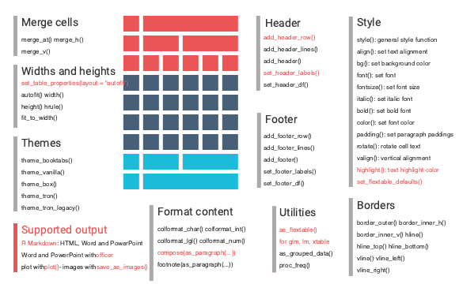

| flextable {flextable} | R Documentation |
Create a flextable object with function flextable.
flextable are designed to make tabular reporting easier for
R users. Functions are available to let you format text, paragraphs and cells;
table cells can be merge vertically or horizontally, row headers can easilly
be defined, rows heights and columns widths can be manually set or automatically
computed.
Default formatting properties are automatically applied to every
flextable you produce. You can change these default values with
function set_flextable_defaults().
flextable( data, col_keys = names(data), cwidth = 0.75, cheight = 0.25, defaults = list(), theme_fun = theme_booktabs ) qflextable(data) regulartable(data, col_keys = names(data), cwidth = 0.75, cheight = 0.25)
data |
dataset |
col_keys |
columns names/keys to display. If some column names are not in the dataset, they will be added as blank columns by default. |
cwidth, cheight |
initial width and height to use for cell sizes in inches. |
defaults, theme_fun |
deprecated, use |
A flextable is made of 3 parts: header, body and footer.
Most functions have an argument named part that will be used
to specify what part of of the table should be modified.
If working with R Markdown document, you should read about knitr
chunk options in knit_print.flextable() and about setting
default values with set_flextable_defaults().

qflextable is a convenient tool to produce quickly
a flextable for reporting where layoout is fixed and columns
widths adjusted with autofit().
Function regulartable is maintained for compatibility with old codes
mades by users but be aware it produces the same exact object than flextable.
This function should be deprecated then removed in the next versions.
style(), autofit(), theme_booktabs(), knit_print.flextable(),
compose(), footnote(), set_caption()
ft <- flextable(head(mtcars)) ft